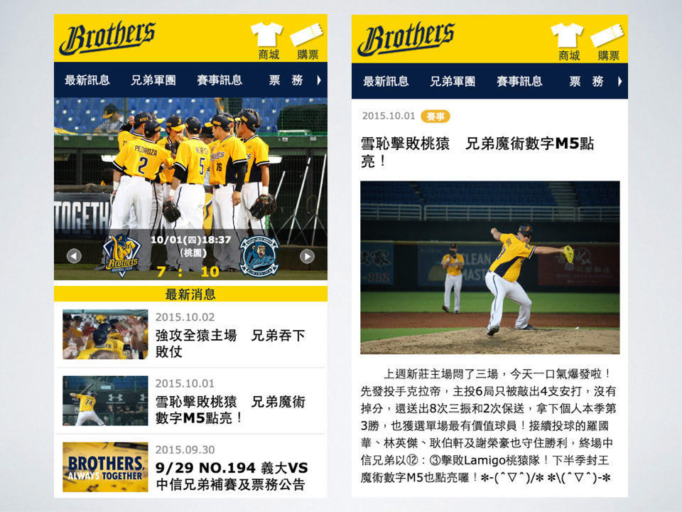
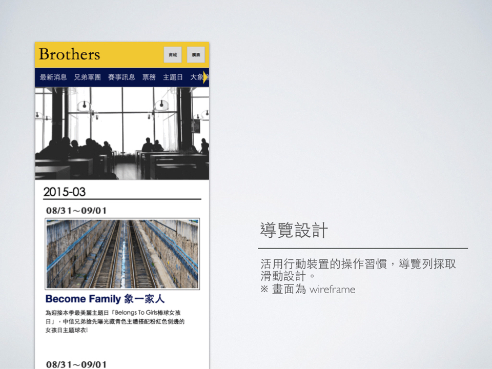
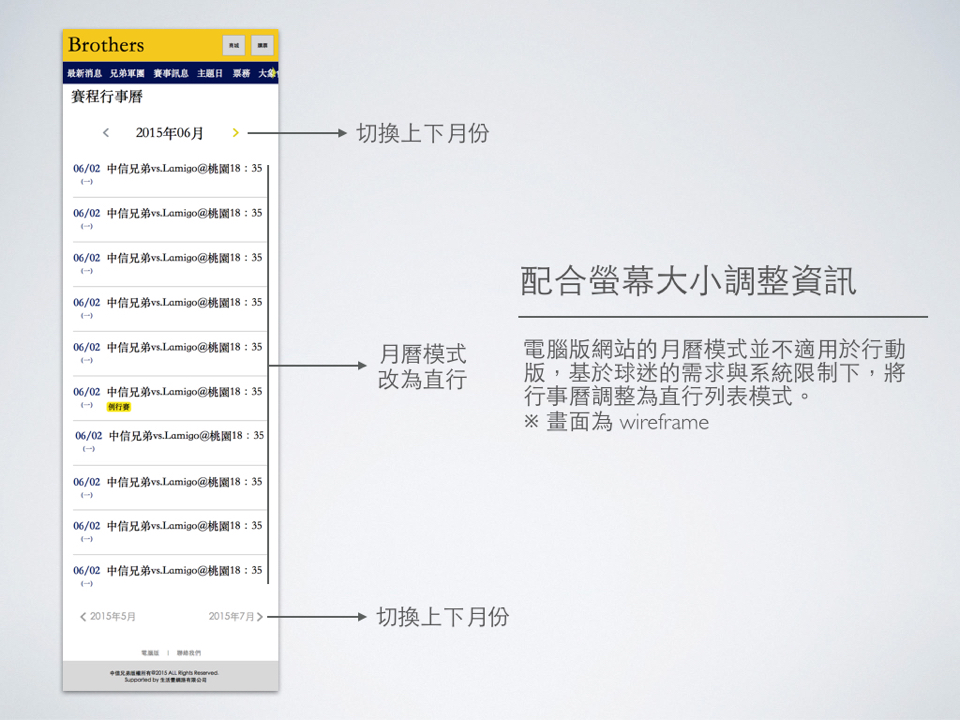

中信兄弟官網行動版
中信兄弟官網超過50%以上為行動裝置流量。行動版設計以使用者與網站互動和操作易用性的觀點出發，在導覽、資訊呈現與功能等部份放入許多電腦版網站不足的細節，藉此提昇球迷使用網站時更好的操作體驗。
My Role
- 架構設計
- 基於 Function List 規劃架構、頁面內容與功能。
- UI 設計（主視覺以外的部份）
- 產出 Wireframe 確立頁面內容與 UI 易用性，製作 Prototype 進行互動設計。
Overview
導覽設計
活用行動裝置的操作習慣，導覽列採取滑動設計。
配合螢幕大小調整資訊
電腦版網站的月曆模式並不適用於行動版，基於球迷的需求與系統限制下，將行事曆調整為直行列表模式。